В состав бизнес-решения Интеграция СПАРК входят виджеты, которые позволяют наглядно отобразить полученную информацию о контрагенте, а также найти его по базе сервиса.
По умолчанию большинство виджетов используются в разделе СПАРК > Расширенная справка по российской компании. Если информация из СПАРК запрашивается с помощью пользовательских бизнес-процессов и передаётся в другое приложение системы, виджеты можно разместить на форме этого приложения.
К виджетам решения относятся:
- размещённые по умолчанию на формах приложения Расширенная справка по российской компании:
- Поиск компании — используется для идентификации компании в СПАРК по одному из её реквизитов, поиску совпадений в базе и передачи остальных реквизитов в ELMA365;
- Индексы Спарка — визуализируют индексы риска компании, полученные через бизнес-процесс в запросе расширенной справки по компании. В виджете отображается значение индекса и цветовой индикатор уровня риска;
- Сводный индикатор риска — показывает совокупную оценку надёжности компании в виде числового показателя и его цветового обозначения. Данные содержатся в расширенной справке по компании и запрашиваются в ходе бизнес-процесса;
- Статус компании в СПАРК — отображает полученное через бизнес-процесс юридическое положение, в котором находится компания согласно действующему законодательству, а также дату его вступления в силу;
- Зона санкционного риска — размещается на форме просмотра приложения, где нужно показать, к какой зоне риска относится юридическое или физическое лицо. Результат определяется на основе данных из сервиса СПАРК и настроек в конструкторе зон санкционного риска;
- Поиск адреса — размещается на форме создания приложения и позволяет получить из СПАРК полный адрес на основании отдельных его данных.
Рассмотрим настройку виджетов и отобразим их на формах приложений. Виджеты Поиск компании, Индексы Спарка, Сводный индикатор риска, Статус компании в СПАРК и Зона санкционного риска используем в приложении Компании, а виджет Поиск адреса — в пользовательском приложении База адресов компании.
Предварительные настройки приложения для использования виджетов
Чтобы разместить виджет, необходимо сопоставить параметры в его настройках с переменными из контекста приложения, на форму которого он добавляется:
- для виджетов Поиск компании, Поиск адреса — в контексте создаются свойства, в которые в ходе работы с виджетом записывается информация из СПАРК;
- для виджетов Индексы Спарка, Сводный индикатор риска, Статус компании в СПАРК — свойства добавляются в контекст приложения в ходе настройки пользовательского бизнес-процесса, в котором запрашивается расширенная справка по компании. В них записываются результаты обработки запроса. Затем значения передаются в виджет и визуализируются.
Необходимые для настройки свойства из контекста приложения указаны в описании каждого виджета.
Виджет «Поиск компании»
Виджет представляет собой строку поиска и используется, чтобы найти компанию по её названию или реквизитам в базе сервиса СПАРК. Полученную из сервиса информацию можно отобразить на форме приложения.
Например, виджет можно использовать для добавления новой компании. Для этого он размещается на форме создания элемента приложения. Пользователь указывает на форме один из реквизитов компании, например, ИНН. Затем компания идентифицируется в сервисе. Найденные совпадения отображаются в ELMA365. Пользователь выбирает одну из записей, и остальные реквизиты компании в её карточке заполняются автоматически.
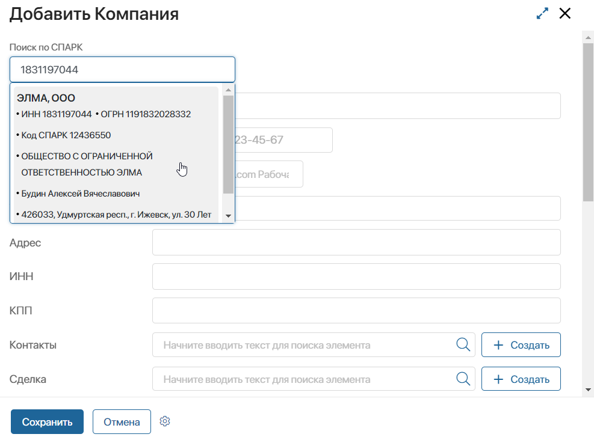
Настройки виджета «Поиск компании»
Для настройки виджета можно создать в контексте приложения только те переменные, значения которых нужно заполнять на форме данными из СПАРК. Они должны совпадать по типу со свойствами виджета:
- Идентификатор в СПАРК (тип Строка);
- Наименование компании или ФИО ИП (тип Строка);
- Полное наименование компании (тип Строка);
- Код ИНН (тип Строка);
- Код ОГРН/ОГРНИП (тип Строка);
- Адрес компании (тип Строка);
- ФИО руководителя компании (тип Ф.И.О.);
- Наименование региона (тип Строка);
- Признак компании (тип Выбор «да/нет»);
- Доменное имя или сайт (тип Ссылка);
- Признак действующей/ликвидированной компании или ИП (тип Выбор «да/нет»).
Чтобы добавить виджет на форму приложения, откройте её в дизайнере интерфейсов. Перетащите виджет из списка в правой части дизайнера на поле для моделирования или нажмите кнопку + Виджет на боковой панели формы. В открывшемся окне выполните настройку.
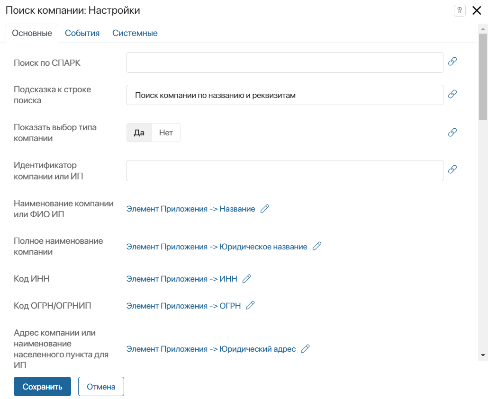
- Поиск по СПАРК — строка поиска в виджете. Для корректной настройки оставьте поле пустым;
- Подсказка к строке поиска — текст, отображающийся на форме под строкой поиска. Например, вы указать, по каким параметрам осуществляется поиск компании в сервисе;
- Показать выбор типа компании — выберите Да, чтобы в виджете отображались типы: Компания, Филиал, ИП. Пользователь сможет выбрать одну из опций, чтобы сузить поиск записи в базе сервиса;
- Настройки для сопоставления со свойствами приложения — поля виджета сопоставляются с соответствующими переменными из контекста приложения. Когда пользователь введёт в строке поиска один из параметров компании, и она идентифицируется в сервисе, в сопоставленные переменные автоматически записываются значения из СПАРК. Например, наименование компании в сервисе можно отобразить в поле Название из приложения Компании. Для сопоставления напротив поля нажмите значок и выберите переменную из контекста приложения.
На вкладках События и Системные задаются системные настройки, одинаковые для всех виджетов.
Чтобы завершить настройку виджета нажмите кнопку Сохранить. Чтобы настроенная форма стала доступна пользователям, нажмите Сохранить и Опубликовать на верхней панели дизайнера интерфейсов.
Виджет «Индексы Спарка»
Индексы риска передаются в ELMA365 в результате запроса Расширенная справка по российской компании. Они помогают выявить благонадёжность компании. В виджете можно отобразить следующие показатели: Индекс должной осмотрительности, Индекс финансового риска, Индекс платежной дисциплины.
По умолчанию виджеты Индексы Спарка добавлены на форму просмотра приложения Расширенная справка по российской компании. Для каждого индекса виджет размещается и настраивается отдельно.
Настроенные виджеты в карточке компании выглядят следующим образом:
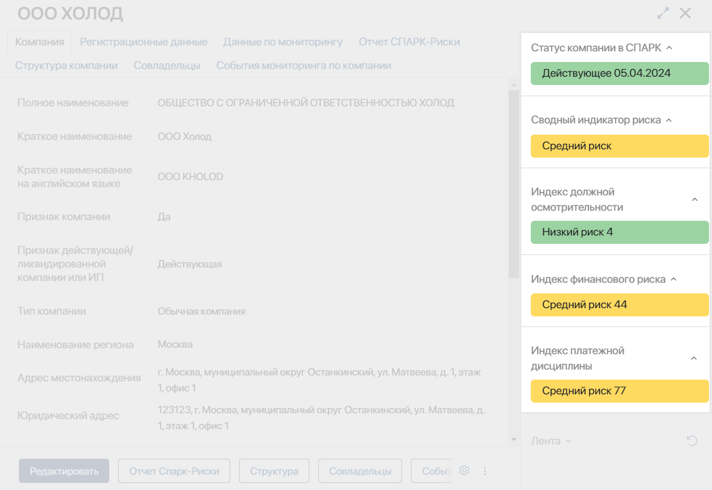
Настройки виджета «Индексы Спарка»
Перед началом настройки убедитесь, что в контексте приложения присутствуют переменные для сопоставления с параметрами виджета.
Для каждого индекса на форму добавляются по два свойства с типом Строка: Описание значения индекса и Значение индекса.
Чтобы в виджете отображались показатели, поля на форме приложения должны содержать данные из СПАРК, полученные в результате запроса расширенной справки компании. Это можно сделать, например, настроив на уровне приложения пользовательский бизнес-процесс.
Рассмотрим настройку виджета на примере и отобразим на форме приложения Компании индекс должной осмотрительности.
Чтобы добавить виджет, в дизайнере интерфейсов перетащите его из списка на боковую панель формы или нажмите кнопку + Виджет. Задайте и сохраните заголовок виджета, который будет отображаться в карточке элемента, например, Индекс должной осмотрительности. Затем выполните настройки в открывшемся окне.
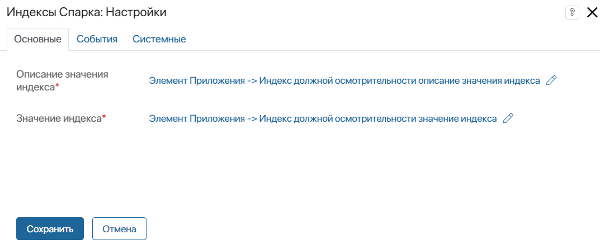
Сопоставьте параметры Описание значения индекса* и Значение индекса* с переменными из контекста приложения, в которых отображается результат запроса соответствующих данных в сервис. Для этого напротив параметра нажмите значок и выберите свойство.
На вкладках События и Системные задаются системные настройки, одинаковые для всех виджетов.
Для завершения настройки виджета нажмите кнопку Сохранить.
Виджет «Сводный индикатор риска»
Сводный индикатор риска компании можно получить из сервиса в результате запроса Расширенная справка по российской компании и отобразить в виджете.
По умолчанию виджет размещён на форме приложения Расширенная справка по российской компании. Показатель можно наглядно отобразить на форме любого приложения.
Настройки виджета «Сводный индикатор риска»
Для настройки виджета убедитесь, что в контекст приложения добавлена переменная Значение индикатора с типом Строка.
Чтобы отобразить индикатор риска в виджете, поле на форме заполняется значением из сервиса. Для этого запускается запрос на получение расширенной справки по компании, например, в ходе пользовательского бизнес-процесса.
Чтобы разместить виджет, в дизайнере интерфейсов перетащите его из списка на боковую панель формы или нажмите кнопку + Виджет. Укажите заголовок виджета, который будет отображаться в карточке элемента, и сохраните настройки.
В открывшемся окне сопоставьте параметр Значение индикатора*. Для этого нажмите значок и выберите переменную из контекста приложения.
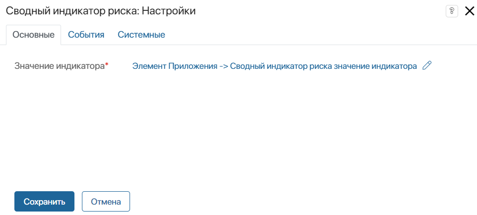
На вкладках События и Системные задаются системные настройки, одинаковые для всех виджетов.
Сохраните настройки виджета.
Виджет «Статус компании в СПАРК»
Статус компании можно получить с помощью запроса в СПАРК Расширенная справка по российской компании.
По умолчанию статус отображается в элементах приложения Расширенная справка по российской компании. С помощью виджета Статус компании в СПАРК показатель можно добавить на форму любого приложения системы.
Настройки виджета «Статус компании в СПАРК»
Перед настройкой виджета убедитесь, что в контексте приложения присутствуют следующие переменные:
- Значение статуса (тип Строка);
- Наименование группы статусов (тип Строка);
- Дата актуальности статуса (тип Дата/время).
Чтобы в виджете отображался статус, запустите запрос в сервис на получение расширенной справки, например, в ходе пользовательского бизнес-процесса.
Для добавления виджета в дизайнере интерфейсов перетащите его на боковую панель формы или нажмите кнопку + Виджет. Задайте и сохраните заголовок виджета, который будет отображаться в карточке элемента. В открывшемся окне выполните настройки.
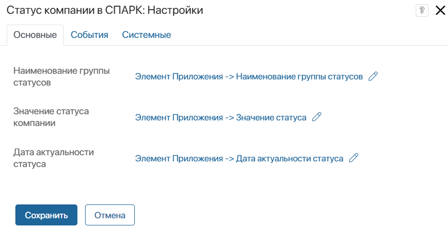
Сопоставьте параметры Наименование группы статусов, Значение статуса компании, Дата актуальности статуса с переменными из контекста приложения, в которых отображается результат запроса в сервис. Для этого напротив параметра нажмите значок и выберите свойство.
На вкладках События и Системные задаются системные настройки, одинаковые для всех виджетов. Они позволяют управлять видимостью виджетов и доступом к ним, настраивать их поведение при наведении курсора и т. д.
Для завершения настройки виджета нажмите кнопку Сохранить.
Чтобы настроенная форма стала доступна пользователям, нажмите Сохранить и Опубликовать на верхней панели дизайнера интерфейсов.
Виджет «Зона санкционного риска»
Виджет размещается на боковой панели формы приложения и отображает название зоны санкционного риска, к которой относится контрагент, с цветовой индикацией этой зоны.
Если пользователь откроет карточку компании, на которую добавлен виджет, выполнится запрос в сервис СПАРК. Полученные данные сопоставляются с правилами, настроенными в ELMA365 в разделе СПАРК. Зона риска, к которой будет отнесена компания, отобразится в виджете.
Для работы виджета предварительно настраиваются справочники в разделе СПАРК. Специалисты по санкционным рискам создают перечень актуальных для компании зон риска и правила, по которым контрагент будет отнесён к той или иной зоне риска.
Если контрагент не будет отнесён ни к одной из зон риска, в виджете отобразится наименование Зеленая с соответствующим цветовым обозначением.
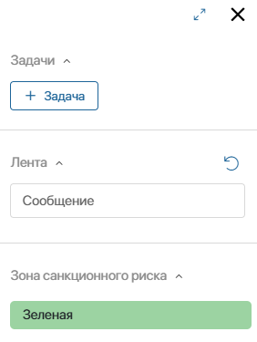
Настройки виджета «Зона санкционного риска»
Чтобы добавить виджет на форму приложения Компании:
- Откройте форму в дизайнере интерфейсов. Перетащите виджет из боковой панели дизайнера на поле для моделирования или нажмите кнопку + Виджет на боковой панели формы.
- В открывшемся окне на вкладке Основное достаточно заполнить те поля, по которым в списках сервиса СПАРК выполнится идентификация контрагента. Например, для поиска компании сопоставьте свойства приложения Компании с данными ИНН и ОГРН в следующих полях:
- Регистрационный код (Санкционные списки компании) — в этом поле сопоставьте ИНН или ОГРН компании для её поиска в санкционных списках СПАРК, которые загружены в ELMA365 и числятся в справочнике Санкционные списки;
- ИНН (Факторы риска компании), ОГРН (Факторы риска компании) — в этих полях укажите ИНН и ОГРН компании для её поиска в списках СПАРК, которые загружены в ELMA365 и числятся в справочнике Факторы риска ФЛ и ЮЛ.
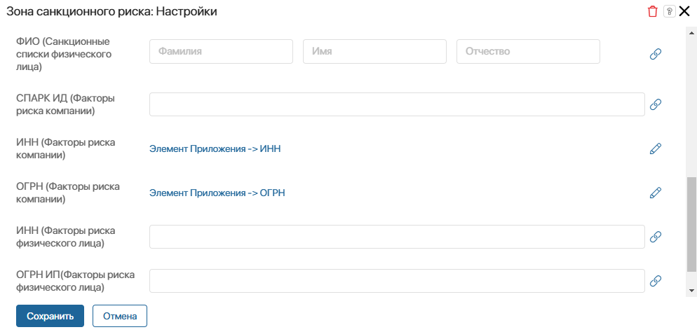
Остальные поля можно заполнять при использовании виджета на формах других приложений, для поиска физического лица или компании, если в системе нет ИНН и ОГРН.
Перечень всех полей в настройках виджета, которые можно заполнять для поиска контрагента
В зависимости от того, какие данные компании или физического лица есть в системе, вы можете заполнить на вкладке Основное следующие поля:
Если вам нужно заполнить поле данными из другого приложения, предварительно в контексте текущего приложения создайте свойство с типом Приложение. Например, поле СПАРК ИД можно заполнить данными компании из приложения Расширенная справка по российской компании. |
- На вкладках События и Системные вы можете задать системные настройки виджета.
- Сохраните настройки виджета, а также сохраните и опубликуйте форму приложения.
Виджет «Поиск адреса»
Виджет представляет собой набор параметров: поле для выбора типа поиска, строку поиска, а также поля, которые заполняются данными полного адреса из СПАРК. Разместите виджет, например, на форме создания пользовательского приложения База адресов компании. Затем полученную из сервиса информацию можно использовать для отображения в договорах, документах с указанием филиалов компании и т. п.
Создавая карточку адреса, пользователю достаточно внести отдельные его данные и затем выбрать полное наименование из найденных в СПАРК. Все поля адреса заполнятся автоматически. Для этого:
- В поле Тип поиска выберите По муниципальному делению или По административно-территориальному делению. Эти варианты соответствуют двум группам, по которым адреса хранятся в сервисе СПАРК.
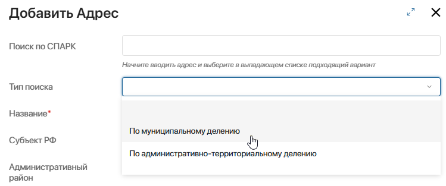
- Начните вводить в строке поиска данные адреса и выберите нужную запись из найденных в сервисе. После этого остальные поля карточки заполнятся автоматически.
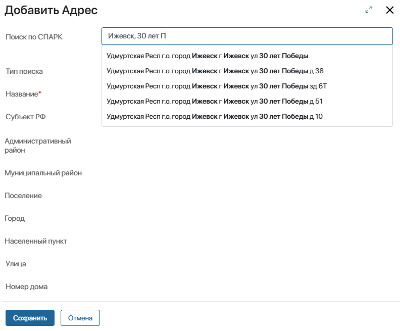
Настройки виджета «Поиск адреса»
- Предварительно в контексте приложения создайте свойства типа Строка, которые нужно заполнить данными из СПАРК. Они должны соответствовать параметрам в настройках виджета.
- Чтобы добавить виджет на форму создания приложения, откройте её в дизайнере интерфейсов. Перетащите виджет из боковой панели дизайнера на поле для моделирования.
- В открывшемся окне на вкладке Основные заполните поля:
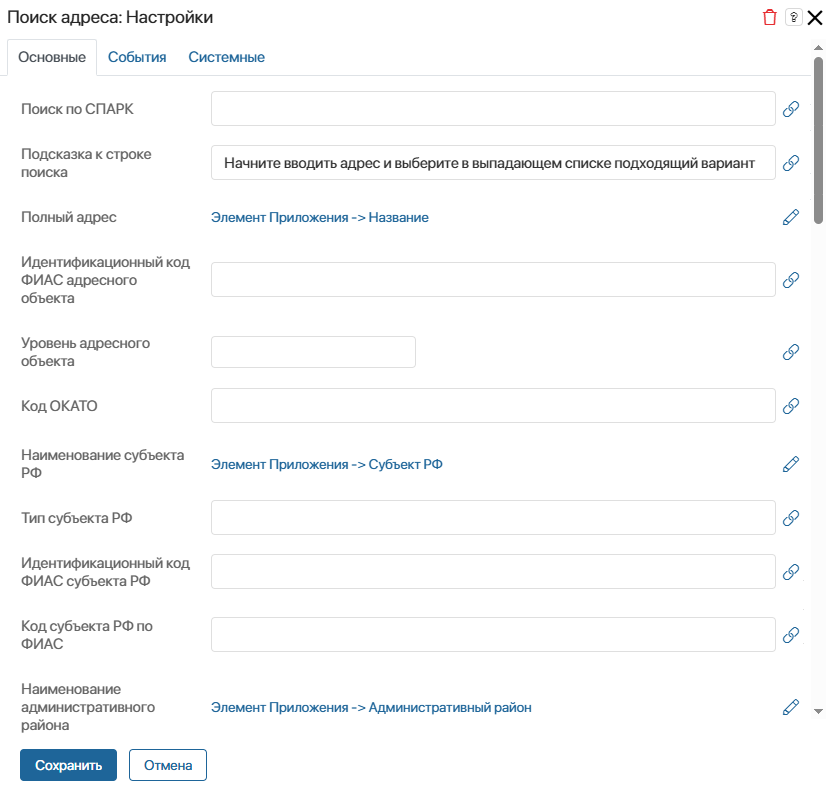
- Поиск по СПАРК — строка поиска в виджете. Её заполнять не нужно;
- Подсказка к строке поиска — текст, который отобразится на форме под строкой поиска;
- Полный адрес — выберите свойство приложения, в которое запишется полное наименование адреса из СПАРК. Так, в приложении База адресов компании можно записать полученное значение как название элемента приложения;
- Параметры для сопоставления со свойствами приложения — выберите другие поля виджета, которые нужно сопоставить со свойствами из контекста приложения. Когда пользователь начнёт вводить адрес в строке поиска и выберет подходящую запись из СПАРК, сопоставленные свойства автоматически заполнятся. Для сопоставления справа от поля нажмите значок и выберите свойство.
- На вкладках События и Системные вы можете задать системные настройки виджета.
- Сохраните настройки виджета, а также сохраните и опубликуйте форму приложения.